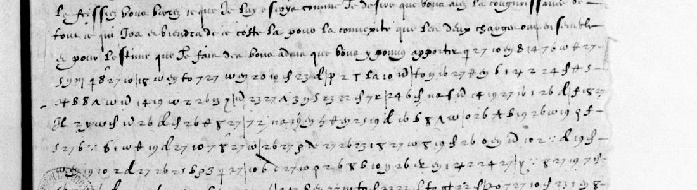

At a glanceExisting decipherment · partial
- The letters
- Henri IV to André Hurault de Maisse, his ambassador at Venice: Chartres, 8 February 1593, and Mantes, 27 April 1593, countersigned Revol.
- Where
- Bibliothèque nationale de France, Français 16093 ff. 406 and 410 (catalogue item 17), with their twins f. 404 and f. 412; clear copies in Brienne 13 (BnF NAF 6984) fol. 171r and 193v.
- The cipher
- Maisse’s Cipher (1592–93): letter-shaped symbols for the letters, homophonic, with two-digit figures for a nomenclator of common words and names. The King calls it the copy of the cipher he sent to Savary de Brèves.
- How the text was obtained
- The old Harlay pièce numbers on the leaves lead, through Berger de Xivrey’s Lettres missives, to clear copies in Brienne 13, which copy the ciphered passages in clear. f. 406 turned out to be the duplicate of f. 404, which carries a partial interlinear decipherment.
- What they say
- Rome: the marquis de Pisany and Cardinal Gondi should stay where they are; Maisse’s long-standing judgement of “les affaires de Rome” proved right.
- Still open
- The Brienne 13 copies are located but not transcribed, so no text of either letter is in this repository and neither counts as read (reading audit, 22 October 2026). Tomokiyo’s key for this cipher is in hand but was not applied: neither leaf is transcribed sign by sign, so the cipher is not verified on these leaves.
- Credit
- Found and contributed by Arya Sanketbhai Patel (PR #7), with the November 1592 letters.
- Other ciphers
- The King’s letters of November 1592 in the same file are in a different, numerical cipher, deciphered on their own page.

01 The leaves
BnF Français 16093 (formerly Saint-Germain-Harlay ms. 1024) is the file of despatches from the Court to Maisse at Venice, digitised as btv1b90074656. Tomokiyo puts ff. 406 and 410 in Maisse’s Cipher (1592–93), the long series ff. 344 to 444, which includes four leaves (ff. 398, 401, 402 and 404) that carry a partial decipherment written between the lines.
| folio | canvas | date on the leaf | pièce | Brienne 13 | confirmed by |
|---|---|---|---|---|---|
| f. 406 | 457 | Chartres, 8 February 1593 | 247 | fol. 171r (canvas 176, right) | heading Coppie de lettre du Roy audict sieur de Maisse de Chartres le huictiesme febvrier 1593; preamble identical |
| f. 410 | 461 | Mantes, 27 April 1593 | 251 | fol. 193v (canvas 199, left) | heading Mante le vingt huictiesme Avril 1593, receue le vingt douxiesme May |
The route to the clear copies is the one described on the page for the 1592 letters: each leaf carries an old Harlay pièce number, Berger de Xivrey cites the letters by it with a reference to “Fonds Brienne, Ms. 13”, and Brienne 13 (BnF NAF 6984, btv1b100904592) copies the despatches in clear, ciphered passages included.
f. 406 is not a separate letter. Tomokiyo lists f. 404 as carrying a partial interlinear decipherment and f. 406 as having none, as though they were two despatches of February 1593. They are the same despatch: both are docketed Chartres 8 Féb. 1593, both open with the same words, and Brienne 13 copies the letter once, at fol. 171r, under pièce 247. f. 406 is the duplicate sent by the other route; the King says in these letters that he writes “par double voye”. Tomokiyo already records that f. 412 is the duplicate of f. 410; f. 406 is the same case, unrecognised. So the plaintext of f. 406 is attested twice, by the Brienne copy and by the interlinear decipherment on its twin.
02 What the letters say
Quotations are transcribed from the Brienne copy; spelling is the copyist’s.
f. 406, with f. 404: Chartres, 8 February 1593 (pièce 247)
The King has answered every despatch as it came and has docketed the dates of each in his replies, so that Maisse can tell what has gone astray. The ciphered matter turns on Rome: the insolence of the Spaniards and what His Holiness will resolve; it would be very much to the purpose that the marquis de Pisany should not leave where he is, and that Cardinal Gondi should be told the same, “ce que j’ay faict à l’instant mesmes”, for if that fails neither of them has much hope of going to Rome, and their entering among those of the League “pourroit faire naistre parmy eux quelque plus grande division”. This is also the letter that says in clear, of the cipher itself, that Maisse has kept “le double du chiffre que j’ay envoyé aud. de Brèves”, which explains why the same key turns up in the Savary de Brèves correspondence.
f. 410: Mantes, 27 April 1593 (pièce 251)
The copy heads it 28 April, received 22 May. The King acknowledges Maisse’s letters of 20 February and 7 and 23 March, the last of which arrived first because the duc de Nevers had kept the other courier some days with him in Champagne. Maisse shows him so clearly the disposition and state of everything there, and in what touches his service, that he takes great contentment in it and recognises more and more the usefulness of his good offices; he asks him to be assured “que j’en estime vostre merite tel envers moy que vostre absence a cette occasion ne vous y fera rien perdre”. And experience has shown that Maisse was not deceived in the judgement he had long since formed of “les affaires de Rome”.
03 The cipher, and what is not done
Tomokiyo reconstructed the key from the sibling letters and published it as an image, “Maisse’ Cipher 2 (BnF fr.16093, f.344 etc.)”. It is homophonic, mixes letter-shaped symbols with figures and carries word codes for vous, ceulx, est, faict, de, des, fort, par, pour, que, qui, advis, ces, comme, bon, avec, et, jay, les, luy, moy. It was not applied to ff. 406 and 410: neither is transcribed sign by sign, so the reading on this page is the clerk’s, not a decipherment checked on the leaves. Transcribing the cipher is a much larger job than for the 1592 letters; the content of both letters is settled by the Brienne copies regardless.
Full texts
The transcription and the decryption of every document on this page, so that the reading can be used and checked. Short files are shown here; all are in the repository.
f. 406 (twin f. 404), Chartres, 8 Feb 1593, from the Brienne 13 clear copy; cipher decrypted on its first lines (WAINUT, 27 Oct 2026) read in part
Henri IV to Maisse at Venice: he has answered every despatch and noted their dates, approves Maisse's sending of duplicates, hopes the despatch for the Pope was not delayed, and has written to the Grand Seigneur and his ministers (Maisse can read the letter to Breves if he kept the copy of the cipher). From the start of the cipher block on (its end is not fixed): Rome; Pisany's arrival in Italy; the war in Piedmont and a letter sent through Lesdiguieres' men with a further charge for Lesdiguieres; Gondi at Nancy with the King's passport; the King going down to Saumur, where his sister is. The earlier summary of f. 406 in this entry and in NOTES (the Spanish insolence, Pisany and Cardinal Gondi not to leave Rome) describes the top of fol. 171r, which is the end of Maisse's own letter to the King of 10 Apr 1593. (Maintainer spot-check of Brienne 13 canvas 176 pending.)
Builds coherent sentences, but under the read bar of 95% of words read as sense; the holes are marked in the reading.
Transcription
# Cipher stretches of BnF fr. 16093 ff. 404, 406 and 410 (Gallica ark btv1b90074656), transcribed sign by sign. # WAINUT, 27 Oct 2026, from full-resolution images of canvases 455 (f. 404), 457 (f. 406) and 461 (f. 410). # This is NOT a full transcription: only the first cipher line(s) of each block. About 18 lines on f. 406 and # about 25 on f. 410 remain to be transcribed. # # Sign names (the leaves use letter-like signs and two-digit figures; Tomokiyo's key: ../src/henryiv_Maisse2.png): # q~ hooked q-like sign (Tomokiyo's l column, row 2) que 9 with a straight tail (word sign "que") # E~ hooked s/3-like sign (an e homophone) f_ long s (e) # D~ theta-like d sign d d-shaped sign (t) # uy "uy" ligature sign (u) rho g/rho-like loop (n) # 9t g with a cross (c) x x-like sign (p) # w omega-like sign (s) de~ looped sign (word sign "de") # desp p with a stroke (word sign "des") my m with a tail (z) # phi 9/phi-like sign (i) pi pi-like sign (r in our reading of the key) # 2+ crossed 2 (i) T T-like sign (f) # z z-like sign (a) to the figure-like sign read "to" (r) # UNK not identified # One line per stretch: label | tokens. f410 l.10 | q~ 27 29 14 E~ to 19 f_ rho 9t E~ z 15 23 y uy 24 26 y 2+ 10 d 8 E~ que 8 6 f_ 17 18 27 10 E~ 26 8 phi 27 26 d f410 l.11 | 16 x E~ D~ uy 2+ uy 24 E~ 16 0 26 d que 17 E~ 26 z uy 0 my de~ 7 y 26 24 d E~ UNK x 10 15 desp f404 l.3 | q~ 27 10 uy 8 14 7 6 w D~ 27 f406 l.16 | 7 E~ 10 uy 8 x q~ 5 w 25 27 6 y my 7 8 E~ 10 18 10 uy to 7 E~ 10 f406 l.17a | 2+ 0 23 d desp z T f406 l.17b | de~ to pi 16 27 25 6 uy 1 + 2 24 E~
Decipherment of the time
# Henri IV to Maisse, Chartres, 8 Feb 1593 (cipher leaf BnF fr. 16093 f. 406, twin f. 404).
# Contemporary clear copy: Brienne 13 = BnF NAF 6984 (Gallica ark btv1b100904592), fol. 171r lower part to fol. 172v.
# Transcribed by WAINUT, 27 Oct 2026, from the Gallica images (canvases 176-178). Line breaks follow the copy.
# [?] = uncertain reading, [...] = not read. The copyist's spelling is kept.
# Checked a second time, independently, on the scans: the heading and first lines on fol. 171r, and the line
# "Le surplus de voz lettres est sur le subiect des affaires de Rome du voiage". The rest is one reading only.
#
# The upper part of fol. 171r ("insollence des Espagnolz fist resoudre Sa Saincteté ... prier Dieu, etc.") is NOT
# this letter. It is the end of Maisse's own letter "Au Roy du dixiesme Avril 1593", which begins on fol. 170v
# (canvas 176, left page: "Sire, J'escrivay d'aujourd'huy en huict iours ..."). Fol. 170v ends "il pourroit bien
# advenir que cette" and fol. 171r goes on "insollence des Espagnolz ...".
## fol. 171r (canvas 176, right page), lower part
Coppie de lettre du Roy audict
sieur de Maisse de Chartres le
huictiesme febvrier 1593 receue
le viii.e Avril.
Monsieur de Maisse, i'ay tousiours faict responce
a voz depesches a mesure que ie les ay receues
et cotté les dattes d'icelles par mes lettres
pour ne vous en laisser en peine, et afin
que vous puissiez recognoistre s'il y en
auroit quelques unes perdues pour l'incer-[?]
titude de quoy, Je trouve bon l'ordre que vous
## fol. 171v (canvas 177, left page)
tenez d'accompagner les plus recentes des
duplicata de la precedente. Depuis les der-
nieres que ie vous ay escriptes, J'ay receu
ensemblement les vostres des vingt six.e
decembre et premier Janvier dont celle cy
contenoit l'arrivee au pres de vous de l'ambass[adeu]r[?]
avec sa depesche laquelle si vous avez trouvé
en quelque chose hors de saison vous aurez
neantmoins cogneu que ce n'est a faute d'a-
voir esté renvoyé assez tost pour se rendre a
temps au lieu ou il doibt aller s'il n'eust eu des
empeschemens extraordinaires en son voiage dont
si les remedes eussent esté en ma puissance
et que ie n'y eusse pourveu ie plaindrois da-
vantage cette incommodité, mais n'y aiant
rien peu davantage que ce que i'ay faict il ne
fault laisser de faire au reste ce que l'on peult
et attendre comme en toutte autre chose le fruict
qu'il plaira a Dieu d'en faire sortir. Je croy
que par ladicte depesche vous aurez trouvé res-
ponce a tous les poinctz que vous estimiez la de-
sirer de ma part touchant mes affaires de dela.
Ou si vous y avez veu deffaillir quelque chose
vous y aurez suppleé comme i'ay remis a vostre
iugement, et m'asseure pour le regard du pape
que vous y aurez faict en sorte qu'elle n'aura
esté retardee a cette occasion. Ainsy que vostre
lettre m'en a donné esperance. Cet acheminement
# A short run of cipher groups stands on an earlier line of f. 406 itself, inside this clear part. The first
# reading placed it near "pour le regard du pape"; the second, independent look placed it on a line near
# "... & puissance ...". It is not transcribed sign by sign, so the words it covers are not fixed.
## fol. 172r (canvas 177, right page)
faict nous attendrons ce que les premieres nouvelles
apres la reception de ladicte depesche nous appor-
teront de ce costé la. Cependant aiant estimé
apropos de faire quelque response a celles que
i'ay receues de la part du sieur de Breves, J'ay
par mesme moien voulu faire un mot de
remerciement au grand seigneur et escrire sem-
blablement a ses principaulx ministres sur
le refus qu'ilz disent par leurs lettres que
vous m'avez cy devant envoyees avoir esté
faict en ma consideration a l'ambassadeur
d'Espagne de le laisser aller a Constantinople.
Si vous avez retenu le double du chiffre que
i'ay envoié audict sieur de Breves ainsy que
i'ay entendu que vous le fissiez vous verrez
ce que ie luy escris Comme ie desire que
vous ayez la cognoissance de tout ce qui
ira et viendra de ce costé la pour la connexité
que les deux charges ont ensemble, et pour
l'estime que ie faictz des bons advis que vous
y pouvez apporter.
# >>> The long cipher block of f. 406 (and of its twin f. 404) starts here, right after "vous y pouvez
# apporter", on the same line of the leaf. Checked on both leaves: see f406_decryption.md.
Le surplus de voz lettres
est sur le subiect des affaires de Rome du
voiage du marquis de Pisani et de ce qui tou-
che la guerre de Piemont, J'ay esté bien aise
d'entendre l'arrivee dudict marquis en Italie
ainsy que i'ay veu par vosdictes lettres n'en
aiant encores rien eu de sa part, Je suis
attendant le succez qu'aura sondict voiage, et
## fol. 172v (canvas 178, left page)
pareillement le nouveau moien que vous
avez recherché pour le secours de mesd. affaires
en Piemont, Enquoy combien que ie cognoisse
que vous faictes ce que vous pouvez, Si est ce
qu'aux autres depesches que i'ay faictes au
sieur Desdiguieres par ceux qui estoient venus
vers moy de sa part, Je luy ay envoié une
lettre que ie vous ay escripte particulierement
pour led. faict afin qu'il la vous face tenir
par telle voie qu'il advisera, et i'ay neantmoins[?]
faict entendre a ses gens ce que i'ay veu par
touttes les lettres du soin que vous y rendiez
afin qu'ilz tesmoignassent audict sieur Des-
diguieres que sans estre sollicité, vous faisiez
de vous mesmes ce qu'il pouvoit desirer.
Touttesfois pour n'y obmettre aucune chose
qui puisse dependre de moy, J'ay voulu y adious-
ter cette recharge de laquelle il se servira si
bon luy semble pour se pouvoir encores mi-
eux esclaircir de ce qu'il en doibt esperer. Le
sieur de Gondy est arrivé a Nancy il y a desia
quelques iours, Je luy ay envoié tel passeport
qu'il a desiré de moy pour le surplus de son
voiage, mais d'autant que i'ay besoin d'en [?]
[?] a tours[?] que ie ne puis differer, J'en[?] des-
cendray iusques a Saumur ou ma soeur est
arrivee puis quelque temps, Je ne le pourray
veoir qu'a mon retour qui pourra estre vers
## The letter goes on on fol. 173r (canvas 178, right page): not transcribed. Where the cipher of f. 406 ends
## (recto or verso, canvas 458) is not fixed.Decryption
# f. 406 (twin f. 404), Henri IV to Maisse, Chartres, 8 Feb 1593: cipher decrypted line by line (first lines only) WAINUT, 27 Oct 2026. Tokens from `cipher_lines.txt`; values from Tomokiyo's "Maisse' Cipher 2" (`../src/henryiv_Maisse2.png`); `python decode_check.py` reproduces the letter strings and the controls. Word signs in capitals. `[?]` = a sign whose value does not fit the copy, or an uncertain transcription. Only the start of the cipher block is decrypted. About 18 further cipher lines of f. 406 (and the verso, canvas 458, if it carries cipher) are not transcribed. The text of the whole block is known from the contemporary clear copy (`f406_brienne_copy.txt`, fol. 172r-172v). | leaf, line | tokens | decryption | clear copy (Brienne 13 fol. 172r) | English | |---|---|---|---|---| | f. 404, l. 3 | q~ 27 10 uy 8 14 7 6 w D~ 27 | l e s u r p l u s d e | Le surplus de | The rest of | | f. 406, cipher l. 1 | 7 E~ 10 uy 8 x q~ 5 w 25 27 6 y my 7 8 E~ 10 18 10 uy to 7 E~ 10 | l e s u r p l u s d e v o z l r e s EST s u r l e s | Le surplus de voz lettres est sur le s[ubiect] | The rest of your letters concerns the [subject] | | f. 406, cipher l. 2, start | 2+ 0 23 d desp z T | i e c t DES a f | (sub)iect des af(faires) | (sub)ject of the af(fairs) | | f. 406, cipher l. 2, later | de~ to pi 16 27 25 6 uy 1 + 2 24 E~ | DE r r[?] m e d u v o a[?] a g e | de Rome du voiage | of Rome, the journey | Notes on the lines: - f. 404 l. 3 is the same despatch sent by the other route. Its first eleven signs give *Le surplus de* exactly. - f. 406 cipher l. 1: the cipher writes the abbreviation *l[ett]res* (l r e s), where the copy has *lettres*. - f. 406 l. 2, *Rome*: the pi-like sign is r in our reading of Tomokiyo's key, which gives *rrme*. The value o for it is not supported by the key, so the sign is left as a hole. - f. 406 l. 2, *voiage*: the `+` sign is a by the key, but the copy and the sense need i. Left as a hole. - f. 406 itself was checked, not only its twin f. 404: the cipher begins right after "faire des bons advis que vous y pouvez apporter", on the same line, as on f. 404 (l. 3). - A short run of cipher groups stands on an earlier line of f. 406, inside the clear part of the letter. It was seen but not decrypted. Controls (`decode_check_output.txt`, difflib ratio between the decryption and the copy): f. 404 l. 3 1.00; f. 406 cipher l. 1 0.91; l. 2 start 1.00; l. 2 later 0.79. With 2000 random permutations of the key values the best ratio on any of these lines is 0.67, and 0.52 or lower on the two longer ones (25 and 13 signs). The short stretches (7 and 11 signs) prove little alone, but they agree with the long ones and with f. 410.
Reading
# f. 406 (twin f. 404): Henri IV to Maisse, Chartres, 8 Feb 1593, received 8 Apr - reading # Running text of the contemporary clear copy (Brienne 13, NAF 6984 fol. 171r-172v; `f406_brienne_copy.txt`), # with the copyist's spelling, line-end hyphens joined and light punctuation added. [?] = uncertain, [...] = not read. # Only the first lines of the cipher block were decrypted against the copy (`f406_decryption.md`). The letter goes on # on fol. 173r, which is not transcribed. ## In clear on f. 406 Monsieur de Maisse, i'ay tousiours faict responce a voz depesches a mesure que ie les ay receues et cotté les dattes d'icelles par mes lettres pour ne vous en laisser en peine, et afin que vous puissiez recognoistre s'il y en auroit quelques unes perdues. Pour l'incertitude de quoy, je trouve bon l'ordre que vous tenez d'accompagner les plus recentes des duplicata de la precedente. Depuis les dernieres que ie vous ay escriptes, j'ay receu ensemblement les vostres des vingt six.e decembre et premier janvier, dont celle cy contenoit l'arrivee au pres de vous de l'ambassadeur[?] avec sa depesche. Laquelle si vous avez trouvé en quelque chose hors de saison, vous aurez neantmoins cogneu que ce n'est a faute d'avoir esté renvoyé assez tost pour se rendre a temps au lieu ou il doibt aller, s'il n'eust eu des empeschemens extraordinaires en son voiage. Dont si les remedes eussent esté en ma puissance et que ie n'y eusse pourveu, ie plaindrois davantage cette incommodité; mais n'y aiant rien peu davantage que ce que i'ay faict, il ne fault laisser de faire au reste ce que l'on peult et attendre, comme en toutte autre chose, le fruict qu'il plaira a Dieu d'en faire sortir. Je croy que par ladicte depesche vous aurez trouvé responce a tous les poinctz que vous estimiez la desirer de ma part touchant mes affaires de dela. Ou si vous y avez veu deffaillir quelque chose, vous y aurez suppleé comme i'ay remis a vostre iugement; et m'asseure, pour le regard du pape, que vous y aurez faict en sorte qu'elle n'aura esté retardee a cette occasion, ainsy que vostre lettre m'en a donné esperance. Cet acheminement faict, nous attendrons ce que les premieres nouvelles apres la reception de ladicte depesche nous apporteront de ce costé la. Cependant, aiant estimé apropos de faire quelque response a celles que i'ay receues de la part du sieur de Breves, j'ay par mesme moien voulu faire un mot de remerciement au grand seigneur et escrire semblablement a ses principaulx ministres sur le refus qu'ilz disent par leurs lettres, que vous m'avez cy devant envoyees, avoir esté faict en ma consideration a l'ambassadeur d'Espagne de le laisser aller a Constantinople. Si vous avez retenu le double du chiffre que i'ay envoié audict sieur de Breves, ainsy que i'ay entendu que vous le fissiez, vous verrez ce que ie luy escris; comme ie desire que vous ayez la cognoissance de tout ce qui ira et viendra de ce costé la, pour la connexité que les deux charges ont ensemble, et pour l'estime que ie faictz des bons advis que vous y pouvez apporter. ## From "Le surplus" on: in cipher on f. 406 and f. 404 (where the cipher block ends is not fixed) Le surplus de voz lettres est sur le subiect des affaires de Rome, du voiage du marquis de Pisani et de ce qui touche la guerre de Piemont. J'ay esté bien aise d'entendre l'arrivee dudict marquis en Italie, ainsy que i'ay veu par vosdictes lettres, n'en aiant encores rien eu de sa part. Je suis attendant le succez qu'aura sondict voiage, et pareillement le nouveau moien que vous avez recherché pour le secours de mesd. affaires en Piemont. Enquoy, combien que ie cognoisse que vous faictes ce que vous pouvez, si est ce qu'aux autres depesches que i'ay faictes au sieur Desdiguieres par ceux qui estoient venus vers moy de sa part, je luy ay envoié une lettre que ie vous ay escripte particulierement pour led. faict, afin qu'il la vous face tenir par telle voie qu'il advisera. Et i'ay neantmoins[?] faict entendre a ses gens ce que i'ay veu par touttes les lettres du soin que vous y rendiez, afin qu'ilz tesmoignassent audict sieur Desdiguieres que, sans estre sollicité, vous faisiez de vous mesmes ce qu'il pouvoit desirer. Touttesfois, pour n'y obmettre aucune chose qui puisse dependre de moy, j'ay voulu y adiouster cette recharge, de laquelle il se servira si bon luy semble, pour se pouvoir encores mieux esclaircir de ce qu'il en doibt esperer. Le sieur de Gondy est arrivé a Nancy il y a desia quelques iours; je luy ay envoié tel passeport qu'il a desiré de moy pour le surplus de son voiage. Mais d'autant que i'ay besoin d'en [...] a Tours[?] que ie ne puis differer, j'en[?] descendray iusques a Saumur, ou ma soeur est arrivee puis quelque temps; je ne le pourray veoir qu'a mon retour, qui pourra estre vers [...] ## Not transcribed: the rest of the letter (fol. 173r) and the end of the cipher block.
Translation
# f. 406 (twin f. 404): Henri IV to Maisse, Chartres, 8 Feb 1593, received 8 Apr - English translation # WAINUT, 27 Oct 2026, from `f406_reading.md` (the Brienne 13 clear copy). Holes as in the reading: # [?] = uncertain, [...] = not read. The end of the letter (fol. 173r) is not transcribed. ## In clear on f. 406 Monsieur de Maisse, I have always answered your despatches as I received them and noted their dates in my letters, so as not to leave you in doubt, and so that you could tell whether any of them had been lost. Because of that uncertainty, I approve your practice of sending duplicates of the previous despatch with the most recent ones. Since the last letters I wrote to you, I have received together yours of 26 December and 1 January; the latter reported the arrival with you of the ambassador[?] with his despatch. If you found that despatch out of season in some respect, you will nevertheless have understood that this was not for want of his being sent back early enough to reach in time the place where he must go, had he not met extraordinary hindrances on his journey. Had the remedies for these been in my power and had I not provided them, I would regret this inconvenience the more; but since I could do no more than I have done, one must still do what one can for the rest and wait, as in all other things, for the fruit that it will please God to bring from it. I believe that in the said despatch you will have found an answer to all the points on which you thought an answer from me was needed concerning my affairs over there. Or if you saw anything lacking, you will have supplied it, as I left it to your judgement; and I am confident, as regards the Pope, that you will have seen to it that it was not delayed on that account, as your letter gave me hope. Once this step is taken, we shall wait for what the first news after the receipt of the said despatch brings us from that quarter. Meanwhile, having thought it fitting to make some reply to the letters I received from the sieur de Brèves, I have by the same means chosen to write a word of thanks to the Grand Seigneur, and likewise to write to his chief ministers about the refusal to let the ambassador of Spain go to Constantinople, which they say in their letters, that you sent me earlier, was made out of regard for me. If you have kept the copy of the cipher that I sent to the said sieur de Brèves, as I understood you would, you will see what I write to him; for I wish you to know all that comes and goes in that quarter, because of the connection between the two charges, and because of the value I set on the good advice you can give in it. ## From "Le surplus" on: in cipher on f. 406 and f. 404 (where the cipher block ends is not fixed) The rest of your letters concerns the affairs of Rome, the journey of the marquis de Pisany and the war in Piedmont. I was very glad to hear of the said marquis's arrival in Italy, as I saw from your said letters, having still had nothing from him myself. I am waiting for the outcome of his said journey, and likewise of the new means you have sought for the relief of my said affairs in Piedmont. In which, although I know that you do what you can, yet with the other despatches I sent to the sieur de Lesdiguières by those who had come to me from him, I sent him a letter that I wrote to you specially on that matter, so that he can forward it to you by whatever route he thinks fit. And I have nevertheless[?] told his people what I saw in all your letters of the care you take there, so that they might bear witness to the said sieur de Lesdiguières that, without being asked, you were doing of your own accord what he could wish. Still, so as to leave out nothing that may depend on me, I have chosen to add this further charge, which he will use if he sees fit, so that he can see even more clearly what he may expect from it. The sieur de Gondi arrived at Nancy some days ago; I have sent him the passport he asked of me for the rest of his journey. But since I need to [...] at Tours[?], which I cannot put off, I shall go down as far as Saumur, where my sister arrived some time ago; I shall not be able to see him until my return, which may be towards [...] ## Not transcribed: the rest of the letter (fol. 173r) and the end of the cipher block.
f. 410 (twin f. 412), Mantes, 27/28 Apr 1593, from the Brienne 13 clear copy; cipher decrypted on its first two lines (WAINUT, 27 Oct 2026) read in part
Henri IV acknowledges Maisse's letters of 20 Feb, 7 and 23 Mar (one courier held by the duc de Nevers in Champagne) and assures him that his absence will cost him nothing. In cipher: experience has proved Maisse right about the affairs of Rome; on advice the King will not yet recall Cardinal de Gondi or the marquis de Pisany, to keep the Pope from extremes, and leaves their moves to the Grand Duke's advice; Gondi's promises. Then (whether still in cipher is not fixed): the original letters of the Grand Seigneur and his ministers received; the King waits on the ambassador's despatch.
Builds coherent sentences, but under the read bar of 95% of words read as sense; the holes are marked in the reading.
Transcription
# Cipher stretches of BnF fr. 16093 ff. 404, 406 and 410 (Gallica ark btv1b90074656), transcribed sign by sign. # WAINUT, 27 Oct 2026, from full-resolution images of canvases 455 (f. 404), 457 (f. 406) and 461 (f. 410). # This is NOT a full transcription: only the first cipher line(s) of each block. About 18 lines on f. 406 and # about 25 on f. 410 remain to be transcribed. # # Sign names (the leaves use letter-like signs and two-digit figures; Tomokiyo's key: ../src/henryiv_Maisse2.png): # q~ hooked q-like sign (Tomokiyo's l column, row 2) que 9 with a straight tail (word sign "que") # E~ hooked s/3-like sign (an e homophone) f_ long s (e) # D~ theta-like d sign d d-shaped sign (t) # uy "uy" ligature sign (u) rho g/rho-like loop (n) # 9t g with a cross (c) x x-like sign (p) # w omega-like sign (s) de~ looped sign (word sign "de") # desp p with a stroke (word sign "des") my m with a tail (z) # phi 9/phi-like sign (i) pi pi-like sign (r in our reading of the key) # 2+ crossed 2 (i) T T-like sign (f) # z z-like sign (a) to the figure-like sign read "to" (r) # UNK not identified # One line per stretch: label | tokens. f410 l.10 | q~ 27 29 14 E~ to 19 f_ rho 9t E~ z 15 23 y uy 24 26 y 2+ 10 d 8 E~ que 8 6 f_ 17 18 27 10 E~ 26 8 phi 27 26 d f410 l.11 | 16 x E~ D~ uy 2+ uy 24 E~ 16 0 26 d que 17 E~ 26 z uy 0 my de~ 7 y 26 24 d E~ UNK x 10 15 desp f404 l.3 | q~ 27 10 uy 8 14 7 6 w D~ 27 f406 l.16 | 7 E~ 10 uy 8 x q~ 5 w 25 27 6 y my 7 8 E~ 10 18 10 uy to 7 E~ 10 f406 l.17a | 2+ 0 23 d desp z T f406 l.17b | de~ to pi 16 27 25 6 uy 1 + 2 24 E~
Decipherment of the time
# Henri IV to Maisse, Mantes, 28 Apr 1593 (cipher leaf BnF fr. 16093 f. 410, dated 27 Apr on the leaf; twin f. 412). # Contemporary clear copy: Brienne 13 = BnF NAF 6984 (Gallica ark btv1b100904592), fol. 193v (canvas 199 left) to # the first lines of fol. 194v (canvas 200 left). Transcribed by WAINUT, 27 Oct 2026, from the Gallica images. # Line breaks follow the copy. [?] = uncertain reading, [...] = not read. The copyist's spelling is kept. # Checked a second time, independently, on the scan: the heading and the lines "L'experience ... par cette preuve" # on fol. 193v. The rest is one reading only. ## fol. 193v (canvas 199, left page) Mante le vingt huict.e Avril 1593 receue le vingt douxiesme May. Monsieur de Maisse depuis ma derniere lettre du vingt neufiesme du passé, J'ay receu les vostres des vingtiesme febvrier, sept et vingt troisiesme mars dont le porteur de la derniere est arrivé plustost que le sieur de la Clielle[?] que mon Cousin le duc de Nevers avoit retenu quelques iours pres de luy en Champagne. Vous me faictes veoir si clairement par voz depes- ches la disposition et l'estat de touttes les choses de dela mesmes en ce qui concerne mon ser- vice que i'en recois beaucoup de contentement et recognois aussi de plus en plus l'utilité que voz bons offices et le soin continuel que vous y rendez m'y apportent, Aussi ie vous prie vous asseurer que i'en estime vostre merite tel envers moy que vostre absence a cette occasion ne vous y fera rien perdre de ce que en servant si bien et dignement vous pouvez iustement desirer de ma bonne grace et fa- veur. # >>> The cipher block of f. 410 (about 25 lines) starts here, immediately after "de ma bonne grace et faveur". # Checked on the leaf: see f410_decryption.md. L'experience a faict cognoistre que vous ne vous estes estes [sic] en rien trompé du iugement que vous avez de long temps faict des affaires de Rome, Touttesfois il a esté besoin d'en esclaircir par cette preuve ## fol. 194r (canvas 199, right page) ceux qui autrement fussent demeurez en opinion qu'on eust faict faulte si on ne l'eust esprou- vé lesquelz auront plus d'occasion cy apres de consentir a prendre autre voye et remedde aux affaires de ce Royaume quand on s'y voudra resoudre. Et combien qu'il y ayt des- ia assez de iustiffication pour le faire, Touttes- fois Je n'ay voulu reiecter l'advis qui m'a esté donné de ne laisser encores revenir le Car- dinal de Gondy ny le marquis de Pisany ce qu'on estime pourra aucunement retenir Sa Saincteté de venir aux extremitez ausquelles on le voudroit pousser quand il cognoistra par cette patience qu'on ne cherche occasion de rompre avec luy Comme les ennemis luy voudront persuader. Et en tout evenement ie seray bien aise qu'ilz s'advancent ou recullent en cela selon les advis que le grand duc leur[?] envoiera et non autrement A[insi?] qu'ilz n'ayent autre nouvelle de moy, l'affection et prudence duquel ie croy qu'ilz ne pourront sortir que tres considerez et tendans au bien de mes affaires. Et en cela ie pense que ce que i'ay faict cognoistre au sieur de Gondy de l'estime que ie fais des conseils dudict duc le pourra beaucoup conforter a embrasser vive- ment tout ce qui peut servir a mon establis- sement suivant les promesses que led. Gondy ## fol. 194v (canvas 200, left page), first lines only (the right edge was cut off in the view used) m'a faictes de sa part, J'ay receu par la Cl[ielle?] [...] les lettres originalles du grand seigneur [...] ses ministres de la traduction desquelles j'a[...] vois desia eu les copies et faict response a[...] contenu[?] d'icelles, J'attendray d'y faire autr[e] chose iusques a tant que ie sache qu'aura pr[o]- duict la depesche de l'ambassadeur [...] qu'il aura trouvé a son arrivee, Ainsy que i'ay veu par voz lettres pour regler la des[...] [...] et progrez de mes affaires de ce co[sté] [la?] Je voy que la resolution a esté bonne d'en faire ainsi [?] pour les cons[i]- derations que vous m'escrivez, Mais aiant faict lad. resolution qu'il eust esté meilleur de le mettre dans quelque bon [...] ## The rest of fol. 194v and what follows: not transcribed. Where the cipher of f. 410 ends is not fixed.
Decryption
# f. 410, Henri IV to Maisse, Mantes, 27/28 Apr 1593: cipher decrypted line by line (first two lines only)
WAINUT, 27 Oct 2026. Tokens from `cipher_lines.txt`; values from Tomokiyo's "Maisse' Cipher 2"
(`../src/henryiv_Maisse2.png`); `python decode_check.py` reproduces the letter strings and the controls.
Word signs in capitals. `[?]` = a sign whose value does not fit the copy, or an uncertain transcription.
Only the first two cipher lines (lines 10-11 of the leaf) are decrypted. About 23 further cipher lines are not
transcribed. The text of the whole block is known from the contemporary clear copy (`f410_brienne_copy.txt`,
fol. 193v-194v).
| leaf, line | tokens | decryption | clear copy (Brienne 13 fol. 193v) | English |
|---|---|---|---|---|
| f. 410, l. 10 | q~ 27 29 14 E~ to 19 f_ rho 9t E~ z 15 / 23 y uy 24 26 y 2+ 10 d 8 E~ / que 8 6 f_ 17 18 27 10 E~ 26 8 phi 27 26 d | l e x p e r i e n c e a FAICT c o u g n o i s t r e QUE r[?] u[?] e[?] VOUS EST e s e n r i e n t | L'experience a faict cognoistre que vous ne vous estes [estes] en rien t[rompé] | Experience has shown that you were in no way mis[taken] |
| f. 410, l. 11 | 16 x E~ D~ uy 2+ uy 24 E~ 16 0 26 d que 17 E~ 26 z uy 0 my de~ 7 y 26 24 d E~ UNK x 10 15 desp | m p e d u i u g e m e n t QUE VOUS e n a v e z DE l o n g t e [?] p s FAICT DES | (trom)pé du iugement que vous avez de long temps faict des [affaires de Rome] | in the judgement that you formed long ago of [the affairs of Rome] |
Notes on the lines:
- The cipher starts immediately after the clear words "de ma bonne grace et faveur".
- *cougnoistre*: the sign after *co* is the uy sign (u), so the cipher spells *cougnoistre* (a spelling variant or
a clerk's slip) where the copy has *cognoistre*.
- *rience a*: `9t` (the crossed g-like sign) is c in the key, `f_ rho` are two signs (e, n) and `z` is a.
- *que vous ne*: the three signs `8 6 f_` that stand where the copy has *vous ne* decode as r u e. Either they are
misread or they are a word sign missing from the key. Left as holes.
- *que vous en avez*: the cipher has *en*, the copy does not. The copy repeats *estes* ("vous estes estes"); the
cipher does not.
- The hooked q-like sign that opens both blocks is in Tomokiyo's l column (row 2); it is not a new homophone. The
*que* sign is a 9 with a straight tail; the two signs look alike.
Values confirmed on these two lines: 27/e, 29/x, 14/p, to/r, 19/i, 23/c, 24/g, 26/n, 10/s, 8/r, 7/l, 16/m, 1/o, y/o,
the x-like sign = p, the d-shaped sign = t, the crossed 2 = i, the z-like sign = a; word signs 15 = *faict*,
17 = *vous*, 18 = *est*, *que*, *des* (p with a stroke) and *de* (looped sign).
Controls (`decode_check_output.txt`): ratio 0.94 (l. 10) and 0.93 (l. 11) against the copy; 2000 random
permutations of the key values give at most 0.53 and 0.49, and 2000 shuffles of the group order at most 0.65 and
0.61.Reading
# f. 410: Henri IV to Maisse, Mantes, 28 Apr 1593 (27 Apr on the leaf), received 22 May - reading # Running text of the contemporary clear copy (Brienne 13, NAF 6984 fol. 193v-194v; `f410_brienne_copy.txt`), # with the copyist's spelling, line-end hyphens joined and light punctuation added. [?] = uncertain, [...] = not read. # Only the first two cipher lines were decrypted against the copy (`f410_decryption.md`). Only the first lines of # fol. 194v are transcribed, and where the cipher block ends is not fixed. ## In clear on f. 410 Monsieur de Maisse, depuis ma derniere lettre du vingt neufiesme du passé, j'ay receu les vostres des vingtiesme febvrier, sept et vingt troisiesme mars, dont le porteur de la derniere est arrivé plustost que le sieur de la Clielle[?], que mon cousin le duc de Nevers avoit retenu quelques iours pres de luy en Champagne. Vous me faictes veoir si clairement par voz depesches la disposition et l'estat de touttes les choses de dela, mesmes en ce qui concerne mon service, que i'en recois beaucoup de contentement, et recognois aussi de plus en plus l'utilité que voz bons offices et le soin continuel que vous y rendez m'y apportent. Aussi ie vous prie vous asseurer que i'en estime vostre merite tel envers moy que vostre absence a cette occasion ne vous y fera rien perdre de ce que, en servant si bien et dignement, vous pouvez iustement desirer de ma bonne grace et faveur. ## From "L'experience" on: in cipher on f. 410 (where the cipher block ends is not fixed) L'experience a faict cognoistre que vous ne vous estes en rien trompé du iugement que vous avez de long temps faict des affaires de Rome. Touttesfois il a esté besoin d'en esclaircir par cette preuve ceux qui autrement fussent demeurez en opinion qu'on eust faict faulte si on ne l'eust esprouvé, lesquelz auront plus d'occasion cy apres de consentir a prendre autre voye et remedde aux affaires de ce royaume, quand on s'y voudra resoudre. Et combien qu'il y ayt desia assez de iustiffication pour le faire, touttesfois je n'ay voulu reiecter l'advis qui m'a esté donné de ne laisser encores revenir le cardinal de Gondy ny le marquis de Pisany. Ce qu'on estime pourra aucunement retenir Sa Saincteté de venir aux extremitez ausquelles on le voudroit pousser, quand il cognoistra par cette patience qu'on ne cherche occasion de rompre avec luy, comme les ennemis luy voudront persuader. Et en tout evenement ie seray bien aise qu'ilz s'advancent ou recullent en cela selon les advis que le grand duc leur[?] envoiera, et non autrement, a[insi?] qu'ilz n'ayent autre nouvelle de moy; l'affection et prudence duquel ie croy qu'ilz ne pourront sortir que tres considerez et tendans au bien de mes affaires. Et en cela ie pense que ce que i'ay faict cognoistre au sieur de Gondy de l'estime que ie fais des conseils dudict duc le pourra beaucoup conforter a embrasser vivement tout ce qui peut servir a mon establissement, suivant les promesses que led. Gondy m'a faictes de sa part. ## Continuation (fol. 194v, first lines; whether still in cipher on f. 410 is not fixed) J'ay receu par la Cl[ielle?] [...] les lettres originalles du grand seigneur [...] ses ministres, de la traduction desquelles j'avois desia eu les copies et faict response a[u] contenu[?] d'icelles. J'attendray d'y faire autre chose iusques a tant que ie sache qu'aura produict la depesche de l'ambassadeur [...] qu'il aura trouvé a son arrivee. Ainsy que i'ay veu par voz lettres, pour regler la des[...] [...] et progrez de mes affaires de ce costé [la?], je voy que la resolution a esté bonne d'en faire ainsi [?] pour les considerations que vous m'escrivez. Mais aiant faict lad. resolution, qu'il eust esté meilleur de le mettre dans quelque bon [...] ## Not transcribed: the rest of fol. 194v and what follows.
Translation
# f. 410: Henri IV to Maisse, Mantes, 28 Apr 1593 (27 Apr on the leaf), received 22 May - English translation # WAINUT, 27 Oct 2026, from `f410_reading.md` (the Brienne 13 clear copy). Holes as in the reading: # [?] = uncertain, [...] = not read. Only the first lines of fol. 194v are transcribed. ## In clear on f. 410 Monsieur de Maisse, since my last letter of the 29th of last month, I have received yours of 20 February and of 7 and 23 March; the bearer of the last arrived sooner than the sieur de la Clielle[?], whom my cousin the duc de Nevers had kept with him for some days in Champagne. You show me so clearly in your despatches the disposition and state of all things over there, even in what concerns my service, that I take much satisfaction from it, and I recognise more and more the usefulness that your good offices and the continual care you take there bring me. So I beg you to be assured that I hold your merit towards me to be such that your absence on this occasion will make you lose nothing of what, by serving so well and worthily, you may rightly desire of my good grace and favour. ## From "L'experience" on: in cipher on f. 410 (where the cipher block ends is not fixed) Experience has shown that you were in no way mistaken in the judgement you formed long ago of the affairs of Rome. Yet this proof was needed to enlighten those who would otherwise have remained of the opinion that it was a mistake not to have tried it; they will now have more reason to agree to take another way and remedy for the affairs of this kingdom, when it is decided upon. And although there is already justification enough for doing so, I have not wished to reject the advice given me not yet to let Cardinal de Gondi or the marquis de Pisany come back. It is thought that this may somewhat hold His Holiness back from the extremes to which some would push him, when he sees from this patience that no occasion is being sought to break with him, as the enemies would like to persuade him. In any event I shall be glad if they go forward or draw back in this according to the advice the Grand Duke sends them[?], and not otherwise, s[o?] that they have no other news from me; I believe that, coming from his affection and prudence, that advice can only be well considered and tend to the good of my affairs. And here I think that what I gave the sieur de Gondi to understand of the regard I have for the said Duke's counsels may greatly encourage him to embrace warmly all that can serve my establishment, according to the promises that the said Gondi made me on his part. ## Continuation (fol. 194v, first lines; whether still in cipher on f. 410 is not fixed) I have received through la Cl[ielle?] [...] the original letters of the Grand Seigneur [...] his ministers, of whose translation I had already had copies, and had replied to their contents[?]. I shall wait to do anything more until I know what the ambassador's despatch has produced [...] that he will have found on his arrival. As I have seen from your letters, to settle the [...] [...] and progress of my affairs in that quarter[?], I see that the decision to act so [?] was good, for the reasons you write to me. But having taken the said decision, that it would have been better to put it in some good [...] ## Not transcribed: the rest of fol. 194v and what follows.
04 Sources
- BnF, Département des Manuscrits, Français 16093, btv1b90074656: ff. 406 (canvas 457), 410 (canvas 461), 404 (canvas 455), 405 (canvas 456).
- BnF, Département des Manuscrits, NAF 6984 = Collection de Brienne 13, btv1b100904592: clear copies at canvases 176 (fol. 171r) and 199 (fol. 193v).
- Berger de Xivrey, Recueil des lettres missives de Henri IV, t. III (1846), closing table of letters not printed; Internet Archive
recueildeslettre03henr. - Satoshi Tomokiyo, Ciphers of Henry IV, cryptiana.web.fc2.com: the cipher periods of fr. 16093 and the key image.
- Image rights: Bibliothèque nationale de France.
Notes: targets/maisse1593/; the folio maps and fetch scripts are in targets/maisse1592/. Split on 14 October 2026 from the page it shared with the 1592 letters (one cipher per entry).
Cite this page
WAINUT, Satoshi Tomokiyo and Arya Sanketbhai Patel, “Henri IV to André Hurault de Maisse at Venice, 1593”, Cyphersolver, posted 15 October 2026, updated 27 October 2026, https://cyphersolver.com/maisse1593.html.